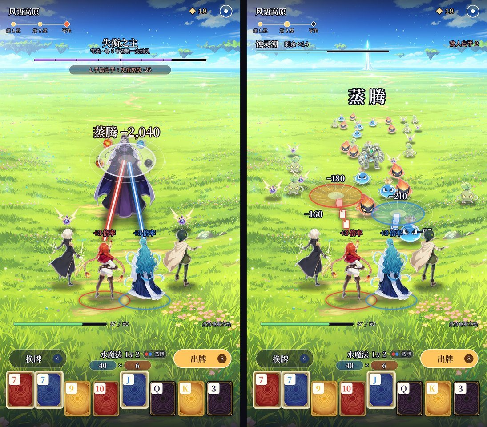

底层一行不改，还是原版《小丑牌》。只是把每一手的计分过程按时间顺序拆开：
敌人的血量 = 原版盲注的目标分。敌人头顶的引导条 = 剩余出牌次数，引导读完、敌人还活着，致命魔法放出来，这一局就输了（就是原版的「出牌次数用完、分数不够」）。

照你的规则第 1 条，下面这些全部沿用二代仓库里现有的原版规则代码（scripts/game/，和原版逐条对过，768 个测试），这次一行都不动：
怎么保证不改： - 战斗画面只读规则代码吐出来的「计分事件」，规则代码不知道画面存在，画面也不能反过来改任何数字； - 加一组自动测试：用机器人跑上千局，每一手都检查「所有角色伤害之和 = 原版这一手的得分」，同时检查打开和关闭战斗画面时，同一个种子打出来的每一手得分完全一样（第 8 节）。
| 角色 | 是谁 | 负责什么 |
|---|---|---|
| 主角 | 一直在场，站在最前排正中 | 牌型的基础筹码和倍率；打出的扑克牌本身的筹码；扑克牌的强化、封印、版本；留在手里的牌的效果（比如钢铁牌）；牌组效果（比如等离子牌组的平衡）；星球牌带来的计分（比如天文台） |
| 小丑牌英雄 | 每张小丑牌一名英雄 | 执行这张小丑牌的原版效果，按原版的触发条件和顺序出手 |
英雄出手的样子：
| 原版效果 | 英雄的演出 |
|---|---|
| +筹码 | 攻击，飞出一道元素光，跳伤害数字 |
| +倍率 | 攻击，光更粗，跳伤害数字 |
| ×倍率 | 大招，镜头轻微推近，跳大号伤害数字 |
| 金币 | 不攻击：头顶冒金币，跳「+$N」（原版功能不变） |
| 成长（比如每打一次 +1 倍率） | 不攻击：身上亮一下，跳「成长」 |
| 复制（蓝图、头脑风暴） | 复制谁就演谁的招式，伤害算在复制者身上（原版事件里就是复制者的位置） |
| 改规则（比如四指、捷径） | 常驻效果，不出手；放在角色脚下的小图标上 |
原版每一手的计分本来就是一串事件，二代的规则代码会把每个事件吐出来，每个事件都带着两样东西：
画面按顺序处理这些事件：
所有伤害一路减下来，加起来一定等于原版最终得分（每一下都是前后两个值之差，中间项全部抵消）。画面不自己算技能伤害，只做这一个减法。
| 事件（原版计分顺序） | 筹码 | 倍率 | 累计得分 | 这一下的伤害 | 谁打的 |
|---|---|---|---|---|---|
| 牌型：对子 Lv1 | 10 | 2 | 20 | 20 | 主角 |
| 扑克牌 K（+10 筹码） | 20 | 2 | 40 | 20 | 主角 |
| 扑克牌 K（+10 筹码） | 30 | 2 | 60 | 20 | 主角 |
| 英雄：「对子时 +8 倍率」那张 | 30 | 10 | 300 | 240 | 英雄 1 |
| 英雄：「×1.5 倍率」那张 | 30 | 15 | 450 | 150 | 英雄 2 |
| 合计 | 450 | 450 |
原版里也有让得分变少的事件，比如第 2 关起会出现的 Boss 盲注「燧石」，在一手开始时把筹码和倍率砍半。这一下的差值是负数：
原版里，有的小丑牌会让扑克牌再计一次分（比如「重新触发所有打出的 2、3、4、5」那张），红色封印也会让牌再计一次。原版事件里会先出一个「重复触发」事件，标着是哪张小丑牌或者红封印触发的，然后是那张牌再计一次的事件。
两种都不改原版分数，只影响伤害记在谁头上。
| 原版 | 二代 |
|---|---|
| 小盲注 | 一个首领（这一段路的守卫） |
| 大盲注 | 一个更强的首领 |
| Boss 盲注 | 守关首领，它的原版效果就是首领的「被动」（比如「所有红桃牌都被削弱」「必须出 5 张牌」） |
| 盲注目标分 | 敌人血量 |
| 这一战已经拿到的分 | 敌人已经掉的血 |
最多同时显示 9 名角色：主角 1 名 + 英雄 8 名。
``` （敌人）
英5 英6 英7 英8 ← 后排 英1 英2 英3 英4 ← 中排 主角 ← 前排正中 ```
从上到下：
用词：牌叫元素牌，牌型叫元素魔法（沿用一代：火魔法、水魔法、冰魔法……），筹码叫「元素力」，倍率照旧叫倍率，小丑牌叫英雄。打出牌里的颜色组合还会报「蒸腾」这类反应名，只是特效，不改分数。
范围：新开一局 → 小盲战 → 结算 → 商店 → 大盲战 → 结算 → 商店 → Boss 战 → 结算。三战都按上面的规则打，选关、结算、商店先用一代现有的界面（只换掉战斗界面）。
| 战 | 原版目标分（白注） | 敌人 |
|---|---|---|
| 小盲 | 300 | 炎之领主 |
| 大盲 | 450 | 潮之领主 |
| Boss 盲注 | 600（第 1 关能抽到的原版 Boss 都是 2 倍） | 失衡之主；名字下面写这一局抽到的原版 Boss 效果 |
要做的：
| 项 | 内容 |
|---|---|
| 战斗画面 | 新写 D3 战斗界面，替换现在的 v8 割草界面：场景、敌人、主角、英雄站位、引导条、伤害数字 |
| 伤害归属 | 按第 3 节读原版计分事件，算每一下的伤害、记到角色头上；第 3.4 节你定了以后照做 |
| 英雄形象 | 第 1 关的商店就能刷出原版大部分小丑牌（光普通稀有度就有 61 张）。最小循环先用 12 个英雄形象轮换：每张小丑牌固定对应其中一个形象，头顶写原版名字。150 张各自的专属形象放在后面批量出（需要你定：是否接受先轮换） |
| 场景 | 三战用三张场景（高原、湖畔、古门前），都用 D3 的镜头 |
| 测试 | 第 8 节的三条自动检查 |
| 交付 | 实机截图和三战完整录屏 |
不做的（放到以后）：割草、多个敌人、新的数值或机制、商店和结算界面的新皮。
| 标准 | 怎么验 |
|---|---|
| 1. 原版小丑牌玩法完全不变 | 规则代码不改，768 个原版测试全部通过 |
| 2. 相同条件下，改造前后最终得分完全一致 | 同一个种子、同样的操作，开着和关着战斗画面各跑一遍，逐手比得分 |
| 3. 所有角色伤害之和 = 原版得分 | 机器人跑 1,000 局，每一手都检查 |
| 4. 触发条件、次数、顺序、效果一致 | 伤害记账只读原版事件，不自己重算；第 2 条的比对同时比事件序列 |
| 5. 最多 1 名主角 + 8 名英雄，超出进候补 | 测试里塞 12 张小丑牌，检查场上 9 名、候补 4 名，触发顺序不变 |
| 6. 英雄数量不受新限制 | 同上；小丑牌位照原版规则扩（比如负片版本），扩出来的照样能拿 |
| 7. 动画不影响计分和流程 | 跳过动画和加速播放时，第 2 条照样成立 |
确认后我开始做最小循环，做完给你实机截图和录屏。
| 版本 | 内容 | 结果 |
|---|---|---|
| v12 | 身后拉远视角：D1 高原 / D2 湖畔 / D3 队伍同框（docs/v2/立项方案_v12.md） |
选了 D3，改成单挑首领 → v13 |
| v11 | A3 俯视 + 软引导 / B3 越肩开阔（docs/v2/立项方案_v11.md） |
用 B3 视角、镜头拉远 |
| v10 | A2 一条路 / B2 开阔大道（docs/v2/立项方案_v10.md） |
引导太硬 |
| v9 | 战斗界面三套（docs/v2/立项方案_v9.md） |
A 像开放世界、B 太压抑 |
| v8 | 《源神：元素牌》题材包装 + 实机换皮（docs/v2/立项方案_v8.md） |
题材定了 |
| v7 | 扑克地牢（战斗照《吸血鬼爬行者》，实机） | — |
| v6 | 调色师（实机切片） | 没有正常战斗的体验 |
| v3 – v5 | 仙门 / 新怪谈 / 乐队等 | — |